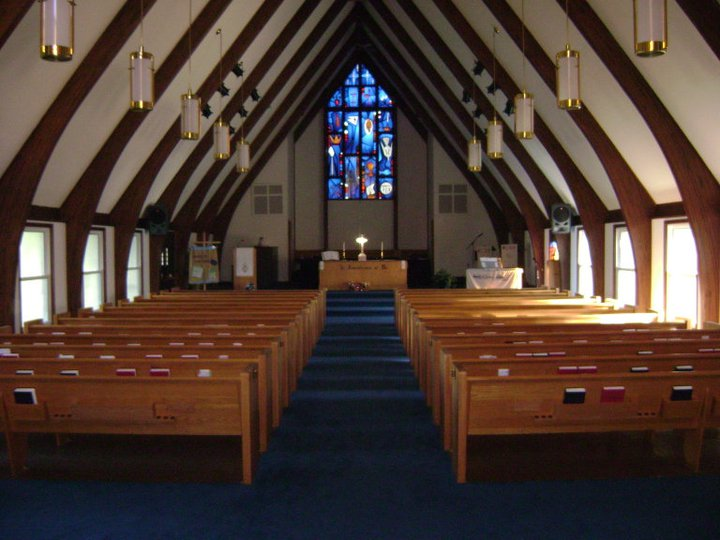

Connect With Us
GENERAL INFORMATION
Eastminster Presbyterian Church
2320 East Lake Road
Erie, PA 16511
(814) 455-7819
help@faithinmotion.com
Church Office Hours
9:00am - 2:30pm Tuesday through Friday
Sundays
10:30 - 11:30am worship service
Eastminster Presbyterian Church
2320 East Lake Road
Erie, PA 16511
(814) 455-7819
help@faithinmotion.com
Church Office Hours
9:00am - 2:30pm Tuesday through Friday
Sundays
10:30 - 11:30am worship service


CHURCH INFORMATION
Eastminster Presbyterian Church is part of the Presbyterian Church (USA) and the Presbytery of Lake Erie.OUR HISTORY
In 1894, we started as a Mission School to serve the eastern part of Erie. The growth drove the creation of Eastminster Presbyterian Church on May 23, 1907. We dedicated a new sanctuary on Lighthouse Street on February 10, 1918 and called it "The Lighthouse Church." Following World War II, the church membership grew to such an extent that we built a new church building in early 1960 and in 1965 erected a Christian Education wing. That is where we continue to worship, learn, and spend fellowship time together now.
OUR MISSION
Celebrating, sharing and connecting God’s love with our community.
OUR VISION
To be a vibrant, welcoming church that demonstrates caring and the love of Christ in our communities.- Matthew 10:40 says, "Anyone who welcomes you welcomes me, and anyone who welcomes me welcomes the one who sent me."
- John 21:16 says. "Again Jesus said, 'Simon son of John, do you love me?' He answered, 'Yes, Lord, you know that I love you.' Jesus said, 'Take care of my sheep.'"
- Ephesians 4:2 says, "Be completely humble and gentle; be patient, bearing with one another in love."
- John 3:34 says "A new command I give you: Love one another. As I have loved you, so you must love one another."
OUR VALUES
FaithfulBy the grace of God, growing our Christian faith based on prayer and biblical truth.
Accepting
Welcoming all with compassion, believing deeply in their goodness.
Relational
Fostering gracious, warm-hearted relationships within our community.
Engaged
From worship to fellowship, from service to mission, acting in generosity.
Diligent
Collaborating with steadfast teamwork to bring God’s love to the world.